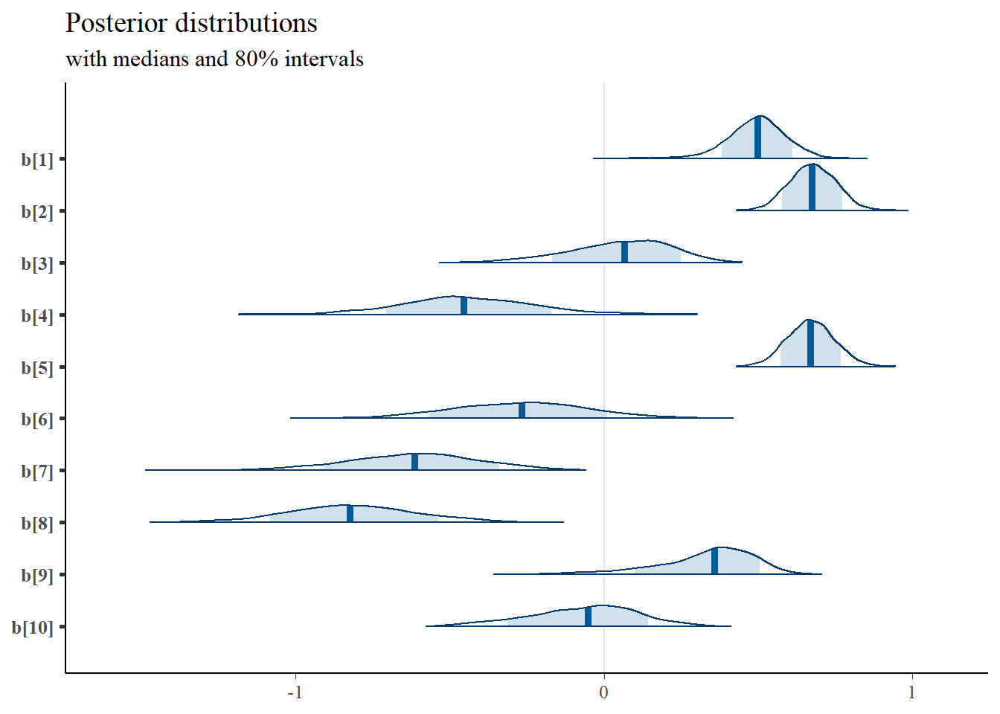

diffIRT Extraversion Data: Test of Rasch Fit Statistics
R. Noah Padgett
2021-04-14
Last updated: 2021-04-15
Checks: 6 1
Knit directory: Padgett-PhD-Dissertation/
This reproducible R Markdown analysis was created with workflowr (version 1.6.2). The Checks tab describes the reproducibility checks that were applied when the results were created. The Past versions tab lists the development history.
The R Markdown is untracked by Git. To know which version of the R Markdown file created these results, you’ll want to first commit it to the Git repo. If you’re still working on the analysis, you can ignore this warning. When you’re finished, you can run wflow_publish to commit the R Markdown file and build the HTML.
Great job! The global environment was empty. Objects defined in the global environment can affect the analysis in your R Markdown file in unknown ways. For reproduciblity it’s best to always run the code in an empty environment.
The command set.seed(20210401) was run prior to running the code in the R Markdown file. Setting a seed ensures that any results that rely on randomness, e.g. subsampling or permutations, are reproducible.
Great job! Recording the operating system, R version, and package versions is critical for reproducibility.
Nice! There were no cached chunks for this analysis, so you can be confident that you successfully produced the results during this run.
Great job! Using relative paths to the files within your workflowr project makes it easier to run your code on other machines.
Great! You are using Git for version control. Tracking code development and connecting the code version to the results is critical for reproducibility.
The results in this page were generated with repository version 02cfd23. See the Past versions tab to see a history of the changes made to the R Markdown and HTML files.
Note that you need to be careful to ensure that all relevant files for the analysis have been committed to Git prior to generating the results (you can use wflow_publish or wflow_git_commit). workflowr only checks the R Markdown file, but you know if there are other scripts or data files that it depends on. Below is the status of the Git repository when the results were generated:
Ignored files:
Ignored: .Rhistory
Ignored: .Rproj.user/
Ignored: aera-dissertation-grant/
Untracked files:
Untracked: analysis/test-diffIRT-extraversion.Rmd
Untracked: code/diffIRT-extraversion-test.R
Untracked: code/fit-sensitivity-RTmodel.R
Untracked: code/load_packages.R
Untracked: code/response-time-weighted-test.RData
Untracked: code/test-response-time.R
Untracked: dissertation-latex/
Untracked: fig/
Untracked: initial-writeup/
Unstaged changes:
Modified: analysis/index.Rmd
Note that any generated files, e.g. HTML, png, CSS, etc., are not included in this status report because it is ok for generated content to have uncommitted changes.
There are no past versions. Publish this analysis with wflow_publish() to start tracking its development.
# test with extraversion data - diffIRT package
source("code/load_packages.R")-- Attaching packages --------------------------------------- tidyverse 1.3.0 --v ggplot2 3.3.3 v purrr 0.3.4
v tibble 3.1.0 v dplyr 1.0.5
v tidyr 1.1.3 v stringr 1.4.0
v readr 1.4.0 v forcats 0.5.1-- Conflicts ------------------------------------------ tidyverse_conflicts() --
x dplyr::filter() masks stats::filter()
x dplyr::lag() masks stats::lag()
Attaching package: 'data.table'The following objects are masked from 'package:dplyr':
between, first, lastThe following object is masked from 'package:purrr':
transposeRegistered S3 method overwritten by 'GGally':
method from
+.gg ggplot2This is bayesplot version 1.8.0- Online documentation and vignettes at mc-stan.org/bayesplot- bayesplot theme set to bayesplot::theme_default() * Does _not_ affect other ggplot2 plots * See ?bayesplot_theme_set for details on theme settingThis is lavaan 0.6-7lavaan is BETA software! Please report any bugs.
Attaching package: 'kableExtra'The following object is masked from 'package:dplyr':
group_rowsLoading required package: statmodLoading required package: rjagsLoading required package: codaLinked to JAGS 4.3.0Loaded modules: basemod,bugs
Attaching package: 'R2jags'The following object is masked from 'package:coda':
traceplot- sirt 3.9-4 (2020-02-17 12:57:09)library(diffIRT)
options(max.print = 10000, scipen = 10, digits=2, width=200)
knitr::opts_chunk$set(
out.width = "300%", fig.align="center"
)
# useful functions
invlogit <- function(x) {exp(x)/(1+exp(x))}
logit <- function(x){log(x/(1-x))}
data("extraversion")Rasch Model: eRm
# eRm
fit.R <- eRm::RM(extraversion[,1:10], sum0 = T)
summary(fit.R)
Results of RM estimation:
Call: eRm::RM(X = extraversion[, 1:10], sum0 = T)
Conditional log-likelihood: -315
Number of iterations: 22
Number of parameters: 9
Item (Category) Difficulty Parameters (eta): with 0.95 CI:
Estimate Std. Error lower CI upper CI
X[2] 1.848 0.20 1.46 2.234
X[3] -0.034 0.25 -0.52 0.451
X[4] -0.862 0.31 -1.47 -0.257
X[5] 1.848 0.20 1.46 2.234
X[6] -0.661 0.29 -1.23 -0.091
X[7] -1.225 0.35 -1.90 -0.546
X[8] -1.710 0.41 -2.51 -0.907
X[9] 0.200 0.24 -0.26 0.664
X[10] -0.171 0.26 -0.67 0.330
Item Easiness Parameters (beta) with 0.95 CI:
Estimate Std. Error lower CI upper CI
beta X[1] -0.767 0.21 -1.182 -0.35
beta X[2] -1.848 0.20 -2.234 -1.46
beta X[3] 0.034 0.25 -0.451 0.52
beta X[4] 0.862 0.31 0.257 1.47
beta X[5] -1.848 0.20 -2.234 -1.46
beta X[6] 0.661 0.29 0.091 1.23
beta X[7] 1.225 0.35 0.546 1.90
beta X[8] 1.710 0.41 0.907 2.51
beta X[9] -0.200 0.24 -0.664 0.26
beta X[10] 0.171 0.26 -0.330 0.67pp <- person.parameter(fit.R)
itemfit(pp)
Itemfit Statistics:
Chisq df p-value Outfit MSQ Infit MSQ Outfit t Infit t Discrim
X[1] 148 113 0.016 1.29 1.20 1.865 1.749 0.064
X[2] 138 113 0.057 1.21 1.02 1.424 0.274 0.009
X[3] 84 113 0.982 0.73 0.73 -1.185 -1.871 0.643
X[4] 76 113 0.997 0.67 0.70 -0.892 -1.464 0.657
X[5] 114 113 0.461 1.00 1.01 0.035 0.102 0.116
X[6] 103 113 0.745 0.90 1.11 -0.195 0.606 0.168
X[7] 75 113 0.998 0.66 0.81 -0.717 -0.715 0.500
X[8] 39 113 1.000 0.34 0.69 -1.353 -0.960 0.605
X[9] 106 112 0.636 0.94 0.99 -0.232 -0.043 0.250
X[10] 79 113 0.994 0.69 0.80 -1.293 -1.213 0.509mod0.fit <- itemfit(pp)
mod0.outfit <- data.frame(
model = rep("model[0]", 10),
outfitMSQ = mod0.fit$i.outfitMSQ,
item = paste0("item[",1:10,"]")
)
mod0.infit <- data.frame(
model = rep("model[0]", 10),
infitMSQ = mod0.fit$i.infitMSQ,
item = paste0("item[",1:10,"]")
)Bayesian Rasch Model: JAGS
# Rasch model
mydata <- list(
x = extraversion[,1:10],
N = nrow(extraversion),
nit=10
)
jags.model <- function(){
### Model
for(p in 1:N){
for(i in 1:nit){
# Rasch model
logit(Prob[p,i]) <- theta[p]-b[i]
# observable dist.
x[p,i] ~ dbern(Prob[p,i])
}
}
for(p in 1:N){
theta[p]~dlogis(0, 1)
}
# sum0 constraint
b[1] <- -sum(b[2:10])
for(i in 2:nit){
# location parameters
b[i] ~ dnorm(0, .1)
}
# Rasch item fit statistics
# deviations
for(i in 1:nit){
for(p in 1:N){
w[p,i] <- Prob[p,i]*(1-Prob[p,i])
z[p,i] <- (x[p,i]-Prob[p,i])/pow(w[p,i], 0.5)
wz2[p,i] <- w[p,i]*pow(z[p,i],2)
}
outfitMSQ[i] <- sum(pow(z[,i], 2))/N
infitMSQ[i] <- sum(wz2[,i])/sum(w[,i])
}
} # end jags model
# params to save
jags.params <- c("b", "outfitMSQ", "infitMSQ")
# fit model
fit1 <- jags(
model.file=jags.model,
data=mydata,
#inits = start,
parameters.to.save = jags.params,
n.iter=10000,
#n.thin = 50,
#n.burnin = 0000,
n.chains = 4
)module glm loadedCompiling model graph
Resolving undeclared variables
Allocating nodes
Graph information:
Observed stochastic nodes: 1429
Unobserved stochastic nodes: 153
Total graph size: 13400
Initializing modelfit <- fit1
print(fit)Inference for Bugs model at "C:/Users/noahp/AppData/Local/Temp/Rtmpo3WZKx/model5a2869994c40.txt", fit using jags,
4 chains, each with 10000 iterations (first 5000 discarded), n.thin = 5
n.sims = 4000 iterations saved
mu.vect sd.vect 2.5% 25% 50% 75% 98% Rhat n.eff
b[1] 0.566 0.195 0.17 0.438 0.571 0.694 0.94 1 4000
b[2] 1.689 0.193 1.31 1.560 1.685 1.821 2.07 1 4000
b[3] -0.135 0.221 -0.57 -0.282 -0.135 0.014 0.30 1 4000
b[4] -0.757 0.252 -1.26 -0.926 -0.750 -0.585 -0.26 1 4000
b[5] 1.689 0.192 1.32 1.557 1.688 1.819 2.08 1 1500
b[6] -0.621 0.244 -1.11 -0.780 -0.613 -0.452 -0.15 1 4000
b[7] -0.986 0.272 -1.53 -1.166 -0.974 -0.797 -0.48 1 4000
b[8] -1.244 0.281 -1.81 -1.431 -1.241 -1.052 -0.71 1 4000
b[9] 0.053 0.212 -0.37 -0.089 0.059 0.198 0.45 1 3300
b[10] -0.254 0.230 -0.72 -0.407 -0.250 -0.096 0.18 1 2300
infitMSQ[1] 1.123 0.072 0.99 1.074 1.119 1.169 1.27 1 3000
infitMSQ[2] 1.125 0.073 0.99 1.073 1.121 1.171 1.28 1 4000
infitMSQ[3] 0.747 0.067 0.64 0.703 0.739 0.782 0.90 1 2500
infitMSQ[4] 0.624 0.078 0.50 0.571 0.611 0.664 0.81 1 4000
infitMSQ[5] 1.104 0.077 0.96 1.049 1.098 1.153 1.27 1 4000
infitMSQ[6] 0.887 0.099 0.73 0.817 0.874 0.943 1.12 1 3100
infitMSQ[7] 0.637 0.084 0.52 0.579 0.622 0.676 0.85 1 2400
infitMSQ[8] 0.497 0.072 0.39 0.449 0.487 0.532 0.67 1 1600
infitMSQ[9] 0.926 0.074 0.80 0.876 0.920 0.968 1.08 1 4000
infitMSQ[10] 0.775 0.078 0.65 0.721 0.766 0.815 0.96 1 3400
outfitMSQ[1] 1.269 0.380 0.92 1.079 1.194 1.355 2.05 1 4000
outfitMSQ[2] 1.283 0.227 0.99 1.141 1.246 1.380 1.77 1 4000
outfitMSQ[3] 0.736 0.339 0.48 0.582 0.664 0.791 1.40 1 4000
outfitMSQ[4] 0.570 0.390 0.32 0.402 0.480 0.610 1.35 1 2700
outfitMSQ[5] 1.139 0.192 0.90 1.028 1.113 1.217 1.53 1 3800
outfitMSQ[6] 0.799 0.228 0.53 0.651 0.750 0.889 1.38 1 830
outfitMSQ[7] 0.531 0.248 0.31 0.399 0.473 0.592 1.07 1 3400
outfitMSQ[8] 0.287 0.090 0.18 0.233 0.267 0.316 0.51 1 1500
outfitMSQ[9] 0.928 0.304 0.65 0.771 0.863 0.998 1.58 1 2700
outfitMSQ[10] 0.691 0.243 0.47 0.563 0.634 0.743 1.26 1 4000
deviance 1055.876 18.515 1021.13 1043.146 1055.404 1067.909 1094.19 1 1600
For each parameter, n.eff is a crude measure of effective sample size,
and Rhat is the potential scale reduction factor (at convergence, Rhat=1).
DIC info (using the rule, pD = var(deviance)/2)
pD = 171.2 and DIC = 1227.1
DIC is an estimate of expected predictive error (lower deviance is better).jags.mcmc <- as.mcmc(fit)
a <- colnames(as.data.frame(jags.mcmc[[1]]))
plot.data <- data.frame(as.matrix(jags.mcmc, chains=T, iters = T))
colnames(plot.data) <- c("chain", "iter", a)
plot_title <- ggtitle("Posterior distributions",
"with medians and 80% intervals")
mcmc_areas(
plot.data,
pars = c(paste0("b[",1:10,"]")),
prob = 0.8) +
plot_titlemcmc_areas(
plot.data,
pars = c(paste0("outfitMSQ[",1:10,"]")),
prob = 0.8) +
plot_titlemcmc_areas(
plot.data,
pars = c(paste0("infitMSQ[",1:10,"]")),
prob = 0.8) +
plot_titleBayesian Rasch Model with RT: JAGS
# set up Rasch response time model
mydata <- list(
x = extraversion[,1:10],
lrt = log(extraversion[,11:20]),
N = nrow(extraversion),
nit=10
)
jags.model <- function(){
### Model
for(p in 1:N){
for(i in 1:nit){
# Rasch model
logit(Prob[p,i]) <- theta[p]-b[i]
# observable dist.
x[p,i] ~ dbern(Prob[p,i])
# log-RT model
dev[p,i]<-theta[p] - b[i]
mu.rt[p,i]<- icept[i] - speed[p] - abs(dev[p,i])
lrt[p,i]~dnorm(mu.rt[p,i],prec[i])
}
}
for(p in 1:N){
theta[p]~dlogis(0,1)
speed[p]~dnorm(sigma.ts*theta[p],prec.s)
}
# sum0 constraint
b[1] <- -sum(b[2:10])
for(i in 2:nit){
# location parameters
b[i] ~ dnorm(0, .1)
}
for(i in 1:nit){
# lrt parameters
icept[i]~dnorm(0,.1)
prec[i]~dgamma(.1,.1)
}
sigma.ts ~ dnorm(0, 0.1)
prec.s~dgamma(.1,.1)
# important parameters
sigma.t <- pow(prec.s, -1) + pow(sigma.ts, 2)
cor.ts <- sigma.ts/(pow(sigma.t,0.5))
# Rasch item fit statistics
# deviations
for(i in 1:nit){
for(p in 1:N){
w[p,i] <- Prob[p,i]*(1-Prob[p,i])
z[p,i] <- (x[p,i]-Prob[p,i])/pow(w[p,i], 0.5)
wz2[p,i] <- w[p,i]*pow(z[p,i],2)
}
outfitMSQ[i] <- sum(pow(z[,i], 2))/N
infitMSQ[i] <- sum(wz2[,i])/sum(w[,i])
}
} # end jags model
# params to save
jags.params <- c("b", "icept","prec","prec.s", "sigma.t", "sigma.ts", "cor.ts", "outfitMSQ", "infitMSQ")
# fit model
fit2 <- jags(
model.file=jags.model,
data=mydata,
#inits = start,
parameters.to.save = jags.params,
n.iter=10000,
#n.thin = 50,
#n.burnin = 0000,
n.chains = 4
)Compiling model graph
Resolving undeclared variables
Allocating nodes
Graph information:
Observed stochastic nodes: 2858
Unobserved stochastic nodes: 319
Total graph size: 19434
Initializing modelfit <- fit2
print(fit)Inference for Bugs model at "C:/Users/noahp/AppData/Local/Temp/Rtmpo3WZKx/model5a282f876d7.txt", fit using jags,
4 chains, each with 10000 iterations (first 5000 discarded), n.thin = 5
n.sims = 4000 iterations saved
mu.vect sd.vect 2.5% 25% 50% 75% 98% Rhat n.eff
b[1] 0.496 0.092 0.302 0.439 0.499 0.555 0.670 1.0 630
b[2] 0.676 0.075 0.536 0.626 0.676 0.729 0.822 1.0 220
b[3] 0.053 0.161 -0.298 -0.053 0.067 0.172 0.326 1.0 140
b[4] -0.444 0.213 -0.850 -0.582 -0.454 -0.306 0.002 1.1 41
b[5] 0.670 0.076 0.525 0.618 0.670 0.721 0.821 1.0 210
b[6] -0.273 0.226 -0.711 -0.430 -0.266 -0.120 0.174 1.0 62
b[7] -0.621 0.221 -1.078 -0.762 -0.612 -0.476 -0.210 1.1 60
b[8] -0.817 0.211 -1.244 -0.959 -0.822 -0.679 -0.401 1.0 110
b[9] 0.328 0.164 -0.085 0.245 0.359 0.442 0.571 1.1 54
b[10] -0.068 0.175 -0.438 -0.182 -0.050 0.058 0.250 1.0 190
cor.ts -0.968 0.005 -0.976 -0.971 -0.968 -0.965 -0.957 1.0 460
icept[1] 0.033 0.101 -0.164 -0.034 0.033 0.097 0.233 1.0 250
icept[2] -0.173 0.086 -0.347 -0.229 -0.169 -0.113 -0.010 1.0 620
icept[3] 0.162 0.167 -0.132 0.038 0.150 0.273 0.518 1.0 140
icept[4] 0.537 0.218 0.082 0.392 0.546 0.676 0.951 1.1 44
icept[5] -0.220 0.086 -0.392 -0.278 -0.217 -0.159 -0.059 1.0 640
icept[6] 0.603 0.234 0.130 0.449 0.601 0.767 1.045 1.0 65
icept[7] 0.882 0.227 0.464 0.727 0.875 1.028 1.345 1.0 99
icept[8] 1.004 0.217 0.583 0.858 1.004 1.150 1.440 1.0 86
icept[9] 0.358 0.170 0.096 0.243 0.331 0.445 0.780 1.1 45
icept[10] 0.166 0.183 -0.164 0.035 0.149 0.285 0.551 1.0 260
infitMSQ[1] 1.031 0.055 0.938 0.994 1.027 1.064 1.155 1.0 62
infitMSQ[2] 1.302 0.072 1.174 1.251 1.298 1.348 1.457 1.0 130
infitMSQ[3] 0.756 0.058 0.666 0.714 0.747 0.787 0.895 1.0 100
infitMSQ[4] 0.638 0.068 0.547 0.590 0.625 0.670 0.802 1.1 52
infitMSQ[5] 1.279 0.072 1.149 1.230 1.276 1.327 1.423 1.0 170
infitMSQ[6] 0.707 0.072 0.615 0.660 0.691 0.737 0.884 1.0 180
infitMSQ[7] 0.570 0.071 0.487 0.524 0.555 0.596 0.746 1.0 98
infitMSQ[8] 0.476 0.047 0.411 0.442 0.466 0.498 0.597 1.0 200
infitMSQ[9] 0.816 0.053 0.738 0.782 0.807 0.839 0.958 1.0 110
infitMSQ[10] 0.745 0.065 0.651 0.699 0.733 0.781 0.913 1.0 170
outfitMSQ[1] 1.171 0.276 0.869 1.000 1.110 1.264 1.846 1.0 120
outfitMSQ[2] 1.420 0.186 1.151 1.292 1.389 1.515 1.863 1.1 48
outfitMSQ[3] 0.640 0.103 0.508 0.569 0.617 0.685 0.903 1.0 160
outfitMSQ[4] 0.599 0.321 0.380 0.442 0.510 0.620 1.570 1.1 90
outfitMSQ[5] 1.469 0.373 1.115 1.292 1.412 1.557 2.093 1.1 58
outfitMSQ[6] 0.583 0.105 0.453 0.510 0.561 0.631 0.826 1.0 1200
outfitMSQ[7] 0.426 0.116 0.317 0.357 0.395 0.458 0.717 1.1 68
outfitMSQ[8] 0.323 0.063 0.252 0.281 0.307 0.345 0.489 1.0 960
outfitMSQ[9] 0.728 0.092 0.605 0.666 0.710 0.764 0.980 1.0 84
outfitMSQ[10] 0.665 0.198 0.491 0.557 0.615 0.700 1.217 1.0 230
prec[1] 6.549 0.844 5.013 5.968 6.517 7.087 8.344 1.0 2000
prec[2] 9.161 1.291 6.847 8.274 9.071 9.963 11.956 1.0 540
prec[3] 9.860 1.279 7.557 8.968 9.774 10.685 12.598 1.0 1600
prec[4] 7.164 0.945 5.481 6.492 7.103 7.785 9.158 1.0 3000
prec[5] 9.163 1.255 6.936 8.269 9.080 9.976 11.854 1.0 510
prec[6] 7.676 0.991 5.898 6.967 7.626 8.327 9.743 1.0 1700
prec[7] 11.103 1.502 8.398 10.059 11.032 12.050 14.196 1.0 4000
prec[8] 8.370 1.106 6.351 7.588 8.311 9.081 10.678 1.0 3600
prec[9] 9.171 1.228 6.986 8.319 9.091 9.946 11.767 1.0 4000
prec[10] 10.119 1.330 7.693 9.174 10.022 10.982 12.902 1.0 4000
prec.s 19.789 3.243 14.184 17.569 19.501 21.716 27.194 1.0 530
sigma.t 0.821 0.052 0.721 0.786 0.820 0.854 0.924 1.0 100
sigma.ts -0.876 0.028 -0.931 -0.895 -0.877 -0.858 -0.820 1.0 96
deviance 2093.646 27.423 2041.067 2074.273 2093.171 2112.358 2148.394 1.0 910
For each parameter, n.eff is a crude measure of effective sample size,
and Rhat is the potential scale reduction factor (at convergence, Rhat=1).
DIC info (using the rule, pD = var(deviance)/2)
pD = 375.1 and DIC = 2468.7
DIC is an estimate of expected predictive error (lower deviance is better).jags.mcmc <- as.mcmc(fit)
a <- colnames(as.data.frame(jags.mcmc[[1]]))
plot.data <- data.frame(as.matrix(jags.mcmc, chains=T, iters = T))
colnames(plot.data) <- c("chain", "iter", a)
plot_title <- ggtitle("Posterior distributions",
"with medians and 80% intervals")
mcmc_areas(
plot.data,
pars = c(paste0("b[",1:10,"]")),
prob = 0.8) +
plot_title
mcmc_areas(
plot.data,
pars = c(paste0("icept[",1:10,"]")),
prob = 0.8) +
plot_titlemcmc_areas(
plot.data,
pars = c(paste0("prec[",1:10,"]")),
prob = 0.8) +
plot_titlemcmc_areas(
plot.data,
pars = c("sigma.t", "sigma.ts", "cor.ts"),
prob = 0.8) +
plot_titlemcmc_areas(
plot.data,
pars = c(paste0("outfitMSQ[",1:10,"]")),
prob = 0.8) +
plot_titlemcmc_areas(
plot.data,
pars = c(paste0("infitMSQ[",1:10,"]")),
prob = 0.8) +
plot_titleBayesian Rasch Model with Misclassification: JAGS
# misclassification model
mydata <- list(
x = extraversion[,1:10],
lrt = log(extraversion[,11:20]),
N = nrow(extraversion),
nit=10, ncat=2
)
jags.model <- function(){
### Model
for(p in 1:N){
for(i in 1:nit){
# Rasch model
logit(Prob[p,i,1]) <- theta[p]-b[i]
Prob[p,i,2] <- 1 - Prob[p,i,1]
# observable dist.
x[p,i] ~ dbern(omega[p,i,1])
# log-RT model
dev[p,i]<-theta[p] - b[i]
mu.rt[p,i]<- icept[i] - speed[p] - abs(dev[p,i])
lrt[p,i]~dnorm(mu.rt[p,i],prec[i])
# misclassificaiton rates
for(c in 1:ncat){
for(ct in 1:ncat){
gamma[p,i,c,ct] <- ifelse(c == ct,
ilogit(icept[i] - speed[p]),
(1/(ncat-1))*(1-ilogit(icept[i] - speed[p]))
)
}
}
# misclassification weighting
for(c in 1:ncat){
omega[p,i, c] = gamma[p,i,1,c]*Prob[p,i,1] + gamma[p,i,2,c]*Prob[p,i,2]
}
}
}
# person parameters
for(p in 1:N){
theta[p]~dlogis(0,1)
speed[p]~dnorm(sigma.ts*theta[p],prec.s)
}
# sum0 constraint
b[1] <- -sum(b[2:10])
for(i in 2:nit){
# location parameters
b[i] ~ dnorm(0, .1)
}
for(i in 1:nit){
# lrt parameters
icept[i]~dnorm(0,.1)
prec[i]~dgamma(.1,.1)
}
sigma.ts ~ dnorm(0, 0.1)
prec.s~dgamma(.1,.1)
# important parameters
sigma.t <- pow(prec.s, -1) + pow(sigma.ts, 2)
cor.ts <- sigma.ts/(pow(sigma.t,0.5))
# Rasch item fit statistics
# deviations
for(i in 1:nit){
for(p in 1:N){
w[p,i] <- omega[p,i,1]*(1-omega[p,i,1])
z[p,i] <- (x[p,i]-omega[p,i,1])/pow(w[p,i], 0.5)
wz2[p,i] <- w[p,i]*pow(z[p,i],2)
}
outfitMSQ[i] <- sum(pow(z[,i], 2))/N
infitMSQ[i] <- sum(wz2[,i])/sum(w[,i])
}
} # end jags model
# vector of all parameters to save
jags.params <- c("b", "icept","prec","prec.s", "sigma.t", "sigma.ts", "cor.ts", "outfitMSQ", "infitMSQ")
# fit model
fit3 <- jags(
model.file=jags.model,
data=mydata,
parameters.to.save = jags.params,
n.iter=10000,
n.chains = 4
)Compiling model graph
Resolving undeclared variables
Allocating nodes
Graph information:
Observed stochastic nodes: 2858
Unobserved stochastic nodes: 319
Total graph size: 36601
Initializing modelfit <- fit3
print(fit)Inference for Bugs model at "C:/Users/noahp/AppData/Local/Temp/Rtmpo3WZKx/model5a2828f65fb7.txt", fit using jags,
4 chains, each with 10000 iterations (first 5000 discarded), n.thin = 5
n.sims = 4000 iterations saved
mu.vect sd.vect 2.5% 25% 50% 75% 98% Rhat n.eff
b[1] 0.692 0.114 0.448 0.62 0.699 0.768 0.892 1.0 110
b[2] 0.874 0.092 0.690 0.81 0.877 0.937 1.050 1.0 520
b[3] -0.016 0.235 -0.460 -0.18 -0.024 0.128 0.472 1.1 35
b[4] -0.614 0.263 -1.078 -0.81 -0.638 -0.414 -0.088 1.1 30
b[5] 0.869 0.092 0.688 0.80 0.869 0.933 1.043 1.0 340
b[6] -0.310 0.292 -0.914 -0.49 -0.313 -0.113 0.283 1.0 110
b[7] -0.750 0.261 -1.230 -0.93 -0.765 -0.569 -0.209 1.0 91
b[8] -0.991 0.267 -1.523 -1.16 -0.987 -0.816 -0.465 1.1 24
b[9] 0.495 0.205 0.012 0.39 0.539 0.639 0.797 1.1 35
b[10] -0.250 0.241 -0.696 -0.42 -0.252 -0.087 0.240 1.0 100
cor.ts -0.971 0.005 -0.979 -0.97 -0.971 -0.968 -0.961 1.0 120
icept[1] -0.111 0.126 -0.365 -0.19 -0.111 -0.033 0.133 1.1 51
icept[2] -0.332 0.112 -0.568 -0.40 -0.328 -0.255 -0.134 1.1 72
icept[3] 0.288 0.247 -0.228 0.14 0.297 0.456 0.764 1.1 26
icept[4] 0.766 0.271 0.225 0.57 0.788 0.974 1.224 1.1 49
icept[5] -0.380 0.113 -0.628 -0.45 -0.375 -0.303 -0.174 1.1 72
icept[6] 0.698 0.302 0.089 0.49 0.706 0.889 1.328 1.0 100
icept[7] 1.068 0.267 0.525 0.89 1.085 1.246 1.560 1.0 94
icept[8] 1.236 0.262 0.702 1.07 1.240 1.403 1.736 1.2 22
icept[9] 0.247 0.202 -0.065 0.12 0.208 0.343 0.749 1.2 24
icept[10] 0.406 0.256 -0.134 0.24 0.417 0.580 0.881 1.0 160
infitMSQ[1] 0.969 0.043 0.893 0.94 0.966 0.996 1.059 1.0 72
infitMSQ[2] 1.191 0.059 1.083 1.15 1.188 1.227 1.319 1.0 87
infitMSQ[3] 0.732 0.047 0.662 0.70 0.725 0.756 0.842 1.0 91
infitMSQ[4] 0.621 0.051 0.550 0.59 0.611 0.645 0.751 1.1 35
infitMSQ[5] 1.179 0.053 1.086 1.14 1.175 1.213 1.290 1.0 160
infitMSQ[6] 0.686 0.063 0.610 0.64 0.671 0.708 0.853 1.0 480
infitMSQ[7] 0.554 0.052 0.481 0.52 0.544 0.577 0.683 1.0 130
infitMSQ[8] 0.464 0.047 0.407 0.43 0.452 0.481 0.595 1.1 33
infitMSQ[9] 0.801 0.045 0.732 0.77 0.793 0.823 0.909 1.1 46
infitMSQ[10] 0.730 0.061 0.646 0.69 0.717 0.760 0.885 1.0 340
outfitMSQ[1] 1.019 0.193 0.801 0.91 0.982 1.079 1.470 1.2 27
outfitMSQ[2] 1.260 0.235 1.018 1.14 1.218 1.325 1.707 1.1 59
outfitMSQ[3] 0.608 0.075 0.510 0.56 0.592 0.641 0.789 1.0 87
outfitMSQ[4] 0.560 0.189 0.379 0.45 0.508 0.603 1.088 1.0 180
outfitMSQ[5] 1.269 0.154 1.052 1.16 1.240 1.348 1.639 1.0 100
outfitMSQ[6] 0.560 0.084 0.452 0.50 0.539 0.598 0.782 1.0 370
outfitMSQ[7] 0.405 0.090 0.311 0.35 0.382 0.435 0.645 1.0 370
outfitMSQ[8] 0.309 0.053 0.238 0.27 0.297 0.331 0.443 1.0 600
outfitMSQ[9] 0.711 0.098 0.606 0.66 0.695 0.740 0.907 1.1 73
outfitMSQ[10] 0.636 0.143 0.481 0.54 0.596 0.684 1.037 1.1 57
prec[1] 6.528 0.856 5.001 5.91 6.481 7.080 8.287 1.0 4000
prec[2] 9.163 1.278 6.912 8.28 9.071 9.979 11.949 1.0 230
prec[3] 9.801 1.265 7.503 8.91 9.726 10.627 12.459 1.0 3600
prec[4] 7.148 0.936 5.456 6.50 7.097 7.740 9.116 1.0 1500
prec[5] 9.199 1.280 6.926 8.30 9.111 10.007 11.992 1.0 870
prec[6] 7.662 0.978 5.851 7.00 7.606 8.287 9.759 1.0 2300
prec[7] 11.160 1.501 8.382 10.13 11.097 12.126 14.266 1.0 4000
prec[8] 8.311 1.105 6.347 7.53 8.267 9.021 10.635 1.0 4000
prec[9] 9.155 1.206 6.940 8.33 9.103 9.927 11.648 1.0 1500
prec[10] 10.100 1.331 7.684 9.17 10.054 10.948 12.912 1.0 690
prec.s 22.091 4.166 15.106 19.16 21.661 24.597 31.499 1.1 44
sigma.t 0.816 0.054 0.724 0.78 0.813 0.850 0.932 1.1 26
sigma.ts -0.876 0.029 -0.936 -0.89 -0.876 -0.856 -0.826 1.1 28
deviance 2106.884 29.033 2050.442 2087.35 2106.474 2126.091 2165.008 1.0 130
For each parameter, n.eff is a crude measure of effective sample size,
and Rhat is the potential scale reduction factor (at convergence, Rhat=1).
DIC info (using the rule, pD = var(deviance)/2)
pD = 411.7 and DIC = 2518.6
DIC is an estimate of expected predictive error (lower deviance is better).jags.mcmc <- as.mcmc(fit)
a <- colnames(as.data.frame(jags.mcmc[[1]]))
plot.data <- data.frame(as.matrix(jags.mcmc, chains=T, iters = T))
colnames(plot.data) <- c("chain", "iter", a)
plot_title <- ggtitle("Posterior distributions",
"with medians and 80% intervals")
mcmc_areas(
plot.data,
pars = c(paste0("b[",1:10,"]")),
prob = 0.8) +
plot_titlemcmc_areas(
plot.data,
pars = c(paste0("icept[",1:10,"]")),
prob = 0.8) +
plot_titlemcmc_areas(
plot.data,
pars = c(paste0("prec[",1:10,"]")),
prob = 0.8) +
plot_title
mcmc_areas(
plot.data,
pars = c("sigma.t", "sigma.ts", "cor.ts"),
prob = 0.8) +
plot_titlemcmc_areas(
plot.data,
pars = c(paste0("outfitMSQ[",1:10,"]")),
prob = 0.8) +
plot_titlemcmc_areas(
plot.data,
pars = c(paste0("infitMSQ[",1:10,"]")),
prob = 0.8) +
plot_titleItem Fit Comparison
fit1$BUGSoutput$summary[paste0("outfitMSQ[",1:10,"]"),] mean sd 2.5% 25% 50% 75% 97.5% Rhat n.eff
outfitMSQ[1] 1.27 0.38 0.92 1.08 1.19 1.35 2.05 1 4000
outfitMSQ[2] 1.28 0.23 0.99 1.14 1.25 1.38 1.77 1 4000
outfitMSQ[3] 0.74 0.34 0.48 0.58 0.66 0.79 1.40 1 4000
outfitMSQ[4] 0.57 0.39 0.32 0.40 0.48 0.61 1.35 1 2700
outfitMSQ[5] 1.14 0.19 0.90 1.03 1.11 1.22 1.53 1 3800
outfitMSQ[6] 0.80 0.23 0.53 0.65 0.75 0.89 1.38 1 830
outfitMSQ[7] 0.53 0.25 0.31 0.40 0.47 0.59 1.07 1 3400
outfitMSQ[8] 0.29 0.09 0.18 0.23 0.27 0.32 0.51 1 1500
outfitMSQ[9] 0.93 0.30 0.65 0.77 0.86 1.00 1.58 1 2700
outfitMSQ[10] 0.69 0.24 0.47 0.56 0.63 0.74 1.26 1 4000fit2$BUGSoutput$summary[paste0("outfitMSQ[",1:10,"]"),] mean sd 2.5% 25% 50% 75% 97.5% Rhat n.eff
outfitMSQ[1] 1.17 0.276 0.87 1.00 1.11 1.26 1.85 1.0 120
outfitMSQ[2] 1.42 0.186 1.15 1.29 1.39 1.51 1.86 1.1 48
outfitMSQ[3] 0.64 0.103 0.51 0.57 0.62 0.69 0.90 1.0 160
outfitMSQ[4] 0.60 0.321 0.38 0.44 0.51 0.62 1.57 1.1 90
outfitMSQ[5] 1.47 0.373 1.12 1.29 1.41 1.56 2.09 1.1 58
outfitMSQ[6] 0.58 0.105 0.45 0.51 0.56 0.63 0.83 1.0 1200
outfitMSQ[7] 0.43 0.116 0.32 0.36 0.39 0.46 0.72 1.1 68
outfitMSQ[8] 0.32 0.063 0.25 0.28 0.31 0.34 0.49 1.0 960
outfitMSQ[9] 0.73 0.092 0.61 0.67 0.71 0.76 0.98 1.0 84
outfitMSQ[10] 0.66 0.198 0.49 0.56 0.61 0.70 1.22 1.0 230fit3$BUGSoutput$summary[paste0("outfitMSQ[",1:10,"]"),] mean sd 2.5% 25% 50% 75% 97.5% Rhat n.eff
outfitMSQ[1] 1.02 0.193 0.80 0.91 0.98 1.08 1.47 1.2 27
outfitMSQ[2] 1.26 0.235 1.02 1.14 1.22 1.32 1.71 1.1 59
outfitMSQ[3] 0.61 0.075 0.51 0.56 0.59 0.64 0.79 1.0 87
outfitMSQ[4] 0.56 0.189 0.38 0.45 0.51 0.60 1.09 1.0 180
outfitMSQ[5] 1.27 0.154 1.05 1.16 1.24 1.35 1.64 1.0 100
outfitMSQ[6] 0.56 0.084 0.45 0.50 0.54 0.60 0.78 1.0 370
outfitMSQ[7] 0.41 0.090 0.31 0.35 0.38 0.43 0.64 1.0 370
outfitMSQ[8] 0.31 0.053 0.24 0.27 0.30 0.33 0.44 1.0 600
outfitMSQ[9] 0.71 0.098 0.61 0.66 0.70 0.74 0.91 1.1 73
outfitMSQ[10] 0.64 0.143 0.48 0.54 0.60 0.68 1.04 1.1 57fit1$BUGSoutput$summary[paste0("infitMSQ[",1:10,"]"),] mean sd 2.5% 25% 50% 75% 97.5% Rhat n.eff
infitMSQ[1] 1.12 0.072 0.99 1.07 1.12 1.17 1.27 1 3000
infitMSQ[2] 1.12 0.073 0.99 1.07 1.12 1.17 1.28 1 4000
infitMSQ[3] 0.75 0.067 0.64 0.70 0.74 0.78 0.90 1 2500
infitMSQ[4] 0.62 0.078 0.50 0.57 0.61 0.66 0.81 1 4000
infitMSQ[5] 1.10 0.077 0.97 1.05 1.10 1.15 1.27 1 4000
infitMSQ[6] 0.89 0.099 0.73 0.82 0.87 0.94 1.12 1 3100
infitMSQ[7] 0.64 0.084 0.52 0.58 0.62 0.68 0.85 1 2400
infitMSQ[8] 0.50 0.072 0.39 0.45 0.49 0.53 0.67 1 1600
infitMSQ[9] 0.93 0.074 0.80 0.88 0.92 0.97 1.08 1 4000
infitMSQ[10] 0.77 0.078 0.65 0.72 0.77 0.82 0.96 1 3400fit2$BUGSoutput$summary[paste0("infitMSQ[",1:10,"]"),] mean sd 2.5% 25% 50% 75% 97.5% Rhat n.eff
infitMSQ[1] 1.03 0.055 0.94 0.99 1.03 1.06 1.15 1.0 62
infitMSQ[2] 1.30 0.072 1.17 1.25 1.30 1.35 1.46 1.0 130
infitMSQ[3] 0.76 0.058 0.67 0.71 0.75 0.79 0.90 1.0 100
infitMSQ[4] 0.64 0.068 0.55 0.59 0.63 0.67 0.80 1.1 52
infitMSQ[5] 1.28 0.072 1.15 1.23 1.28 1.33 1.42 1.0 170
infitMSQ[6] 0.71 0.072 0.61 0.66 0.69 0.74 0.88 1.0 180
infitMSQ[7] 0.57 0.071 0.49 0.52 0.55 0.60 0.75 1.0 98
infitMSQ[8] 0.48 0.047 0.41 0.44 0.47 0.50 0.60 1.0 200
infitMSQ[9] 0.82 0.053 0.74 0.78 0.81 0.84 0.96 1.0 110
infitMSQ[10] 0.75 0.065 0.65 0.70 0.73 0.78 0.91 1.0 170fit3$BUGSoutput$summary[paste0("infitMSQ[",1:10,"]"),] mean sd 2.5% 25% 50% 75% 97.5% Rhat n.eff
infitMSQ[1] 0.97 0.043 0.89 0.94 0.97 1.00 1.06 1.0 72
infitMSQ[2] 1.19 0.059 1.08 1.15 1.19 1.23 1.32 1.0 87
infitMSQ[3] 0.73 0.047 0.66 0.70 0.73 0.76 0.84 1.0 91
infitMSQ[4] 0.62 0.051 0.55 0.59 0.61 0.64 0.75 1.1 35
infitMSQ[5] 1.18 0.053 1.09 1.14 1.18 1.21 1.29 1.0 160
infitMSQ[6] 0.69 0.063 0.61 0.64 0.67 0.71 0.85 1.0 480
infitMSQ[7] 0.55 0.052 0.48 0.52 0.54 0.58 0.68 1.0 130
infitMSQ[8] 0.46 0.047 0.41 0.43 0.45 0.48 0.59 1.1 33
infitMSQ[9] 0.80 0.045 0.73 0.77 0.79 0.82 0.91 1.1 46
infitMSQ[10] 0.73 0.061 0.65 0.69 0.72 0.76 0.88 1.0 340# plotting over all items
plot.dat <- cbind(
fit1$BUGSoutput$sims.matrix[,paste0("outfitMSQ[",1:10,"]")],
fit2$BUGSoutput$sims.matrix[,paste0("outfitMSQ[",1:10,"]")],
fit3$BUGSoutput$sims.matrix[,paste0("outfitMSQ[",1:10,"]")]
)
colnames(plot.dat) <- paste0(c(rep("m1",10), rep("m2",10), rep("m3",10)), colnames(plot.dat))
plot.dat <- plot.dat %>%
as.data.frame()%>%
pivot_longer(
cols=everything(),
names_to = "model",
values_to = "outfitMSQ"
) %>%
mutate(
item = paste0("item",substr(model, 12,99)),
model = paste0("model[",substr(model, 2,2),"]")
)
ggplot(plot.dat, aes(x=outfitMSQ, group=model, color=model))+
geom_density()+
geom_vline(xintercept = 1, color="black", linetype="dotted")+
geom_vline(data=mod0.outfit, aes(xintercept=outfitMSQ, color="model[0]"),
linetype="longdash")+
facet_wrap(.~item)+
lims(x=c(0,3))+
theme_bw()+
theme(
panel.grid = element_blank()
)Warning: Removed 149 rows containing non-finite values (stat_density).# infit
plot.dat <- cbind(
fit1$BUGSoutput$sims.matrix[,paste0("infitMSQ[",1:10,"]")],
fit2$BUGSoutput$sims.matrix[,paste0("infitMSQ[",1:10,"]")],
fit3$BUGSoutput$sims.matrix[,paste0("infitMSQ[",1:10,"]")]
)
colnames(plot.dat) <- paste0(c(rep("m1",10), rep("m2",10), rep("m3",10)), colnames(plot.dat))
plot.dat <- plot.dat %>%
as.data.frame()%>%
pivot_longer(
cols=everything(),
names_to = "model",
values_to = "infitMSQ"
) %>%
mutate(
item = paste0("item",substr(model, 11,99)),
model = paste0("model[",substr(model, 2,2),"]")
)
ggplot(plot.dat, aes(x=infitMSQ, group=model, color=model))+
geom_density()+
geom_vline(xintercept = 1, color="black", linetype="dotted")+
geom_vline(data=mod0.infit, aes(xintercept=infitMSQ, color="model[0]"),
linetype="longdash")+
facet_wrap(.~item)+
lims(x=c(0,3))+
theme_bw()+
theme(
panel.grid = element_blank()
)
sessionInfo()R version 4.0.5 (2021-03-31)
Platform: x86_64-w64-mingw32/x64 (64-bit)
Running under: Windows 10 x64 (build 19042)
Matrix products: default
locale:
[1] LC_COLLATE=English_United States.1252 LC_CTYPE=English_United States.1252 LC_MONETARY=English_United States.1252 LC_NUMERIC=C LC_TIME=English_United States.1252
attached base packages:
[1] stats graphics grDevices utils datasets methods base
other attached packages:
[1] sirt_3.9-4 R2jags_0.6-1 rjags_4-10 coda_0.19-4 eRm_1.0-2 diffIRT_1.5 statmod_1.4.35 xtable_1.8-4 kableExtra_1.3.4 lavaan_0.6-7
[11] polycor_0.7-10 bayesplot_1.8.0 ggmcmc_1.5.1.1 data.table_1.14.0 patchwork_1.1.1 forcats_0.5.1 stringr_1.4.0 dplyr_1.0.5 purrr_0.3.4 readr_1.4.0
[21] tidyr_1.1.3 tibble_3.1.0 ggplot2_3.3.3 tidyverse_1.3.0 workflowr_1.6.2
loaded via a namespace (and not attached):
[1] TAM_3.5-19 colorspace_2.0-0 ellipsis_0.3.1 ggridges_0.5.3 rprojroot_2.0.2 fs_1.5.0 rstudioapi_0.13 farver_2.1.0 fansi_0.4.2 mvtnorm_1.1-1
[11] lubridate_1.7.10 xml2_1.3.2 splines_4.0.5 mnormt_2.0.2 knitr_1.31 jsonlite_1.7.2 broom_0.7.5 dbplyr_2.1.0 compiler_4.0.5 httr_1.4.2
[21] backports_1.2.1 assertthat_0.2.1 Matrix_1.3-2 cli_2.3.1 later_1.1.0.1 htmltools_0.5.1.1 tools_4.0.5 gtable_0.3.0 glue_1.4.2 reshape2_1.4.4
[31] Rcpp_1.0.6 cellranger_1.1.0 jquerylib_0.1.3 vctrs_0.3.6 svglite_2.0.0 nlme_3.1-152 psych_2.0.12 xfun_0.21 ps_1.6.0 rvest_1.0.0
[41] lifecycle_1.0.0 MASS_7.3-53.1 scales_1.1.1 hms_1.0.0 promises_1.2.0.1 parallel_4.0.5 RColorBrewer_1.1-2 yaml_2.2.1 sass_0.3.1 reshape_0.8.8
[51] stringi_1.5.3 highr_0.8 boot_1.3-27 rlang_0.4.10 pkgconfig_2.0.3 systemfonts_1.0.1 evaluate_0.14 lattice_0.20-41 labeling_0.4.2 tidyselect_1.1.0
[61] GGally_2.1.1 plyr_1.8.6 magrittr_2.0.1 R6_2.5.0 generics_0.1.0 DBI_1.1.1 pillar_1.5.1 haven_2.3.1 withr_2.4.1 abind_1.4-5
[71] modelr_0.1.8 crayon_1.4.1 utf8_1.1.4 tmvnsim_1.0-2 rmarkdown_2.7 grid_4.0.5 readxl_1.3.1 CDM_7.5-15 pbivnorm_0.6.0 git2r_0.28.0
[81] reprex_1.0.0 digest_0.6.27 webshot_0.5.2 httpuv_1.5.5 stats4_4.0.5 munsell_0.5.0 viridisLite_0.3.0 bslib_0.2.4 R2WinBUGS_2.1-21